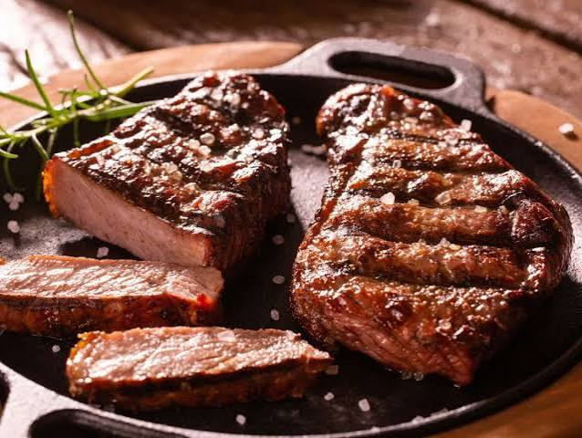
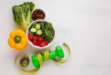

Meu primeiro post
por: Welliton Henrik
Boas-vindas ao meu blog! Aqui vou compartilhar dicas de programação e curiosidades da área de tecnologia.
Vou compartilhar conhecimentos sobre tecnologia e programação
por: Welliton Henrik
Boas-vindas ao meu blog! Aqui vou compartilhar dicas de programação e curiosidades da área de tecnologia.

por: Welliton Henrik
Manter uma dieta fitness mesmo com a agenda lotada depende muito mais de estratégia do que de força de vontade, começando pelo hábito de separar duas horas do seu fim de semana para o meal prep — preparando e porcionando proteínas magras, vegetais e carboidratos complexos para os dias úteis, o que evita escolhas impulsivas quando a fome aperta. No dia a dia, simplifique a montagem das refeições usando a regra visual do prato (metade de saladas e legumes, um quarto de proteínas e um quarto de carboidratos), mantenha lanches práticos e proteicos sempre à mão (como iogurte natural, frutas ou oleaginosas) e priorize a hidratação constante ao longo do expediente, garantindo energia estável para o trabalho e para os treinos sem depender de dietas restritivas impossíveis de sustentar.
por: Welliton Henrik
O emagrecimento saudável e duradouro na dieta fitness não exige cortar tudo o que você gosta, mas sim criar um déficit calórico inteligente onde a prioridade é preservar a massa muscular e controlar a fome. Para isso, inclua uma boa fonte de proteína em todas as refeições — pois ela aumenta a saciedade e acelera o metabolismo —, troque bebidas açucaradas e alcoólicas por água, chás ou opções zero açúcar para eliminar calorias líquidas invisíveis e encha metade do prato com vegetais ricos em fibras para dar volume à comida com poucas calorias. Para fechar, aplique a regra do 80/20, mantendo 80% da semana focada em alimentos naturais e deixando 20% para refeições livres planejadas, garantindo constância psicológica e resultados reais sem o temido efeito sanfona.

por: Welliton Henrik
Para quem busca hipertrofia e melhor rendimento nos treinos, a alimentação funciona como o alicerce da construção muscular, exigindo um leve superávit calórico aliado à ingestão adequada de proteínas (entre 1,6 g e 2,2 g por quilo de peso corporal ao dia) distribuídas ao longo das refeições para otimizar a síntese proteica. Além disso, nunca subestime os carboidratos: eles são o combustível principal para treinar pesado e evitar a fadiga precoce, devendo estar presentes tanto nas refeições principais (arroz, batata-doce, aveia) quanto no pré-treino para garantir força máxima, tudo isso somado a uma hidratação rigorosa — já que músculos bem hidratados se recuperam mais rápido e respondem melhor aos estímulos da musculação.